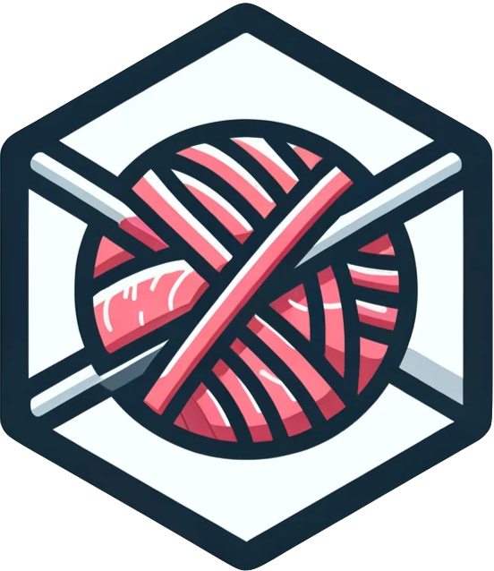
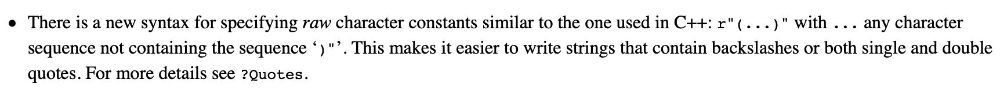

"hello 'world'"[1] "hello 'world'"'bonjour "monde"'[1] "bonjour \"monde\""February 17, 2024

… 🤦♂️ so a few days ago, the valentine 📦 hit CRAN, and on the morning of feb 14, I was eager to post something using it on various socials.
I had already posted about it a few days ago using typical examples, e.g. valentine::roses("dplyr"), or valentine::roses("data.table") … so I wanted to post something different. 💡 the package had arrived on CRAN so why not inception it and do valentine::roses("valentine").
Obviously, the 🤖 does not know anything about an R package called valentine, which is the perfect use case for the hint= argument so can be used to add something to the prompt before it is sent to ChatGPT through the irudnyts/openai package.
I later realised I made a mistake, and so I almost 🗑️ the post to do it again, but then I thought I would write this post instead in the off chance that someone can learn from my mistake.
Can you spot it ?
In R, strings can contain " and ' characters, the rules are simple. If you are inside a " string, you can have a ' character, if you are inside a ' string, you can have a " character without needing to escape them:
And otherwise you need to escape them
🤢 escaping strings is a pain, so R 4.0.0 included raw strings, which you can learn more about in this article from Josiah Parry. Bonus points for the Seinfeld gif.

We can then use raw strings to include a mix of single and double quotes, which is perfect for our use case here, because we can to augment the prompt valentine::roses() will compose with some information about what the package does.
The valentine package was released specially for this years’s valentine’s day, its description is: Uses ‘ChatGPT’ <https://openai.com/> to create poems about R packages. Currently contains the roses() function to make “roses are red, …” style poems and the prompt() function to only assemble the prompt without submitting it to ‘ChatGPT’.
We have a happy mix of double quotes “roses are red, …” and single quotes: ‘ChatGPT’ so we can use raw strings.
hint <- r"( The valentine package was released specially for this years's valentine's day, its description is: Uses 'ChatGPT' <https://openai.com/> to create poems about R packages. Currently contains the roses() function to make "roses are red, ..." style poems and the prompt() function to only assemble the prompt without submitting it to 'ChatGPT'. )"
hint[1] " The valentine package was released specially for this years's valentine's day, its description is: Uses 'ChatGPT' <https://openai.com/> to create poems about R packages. Currently contains the roses() function to make \"roses are red, ...\" style poems and the prompt() function to only assemble the prompt without submitting it to 'ChatGPT'. "We would just need to supply hint to the corresponding argument, i.e. valentine::roses("valentine", hint = r"( ... )") except that instead 🤦♂️ I included "valentine" in the raw string.
ChatGPT did not care much, but had to work from a weird prompt:
Make a 4 lines "roses are red ..." poem about the R package "valentine", hint = "The valentine package [...] it to 'ChatGPT'.)". Include a bunch of emojis. instead of: